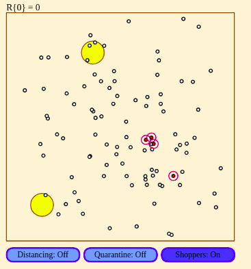

Welcome to Andy Chen's blog

Infectious Disease Simulation, July 21 2020
About me
I'm a high school student interested in computer science and machine learning. Here I mainly talk about projects I've made or things that interest me